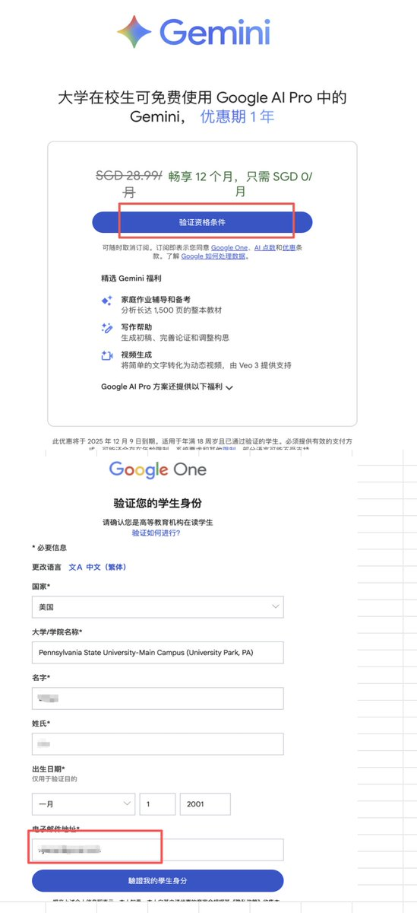
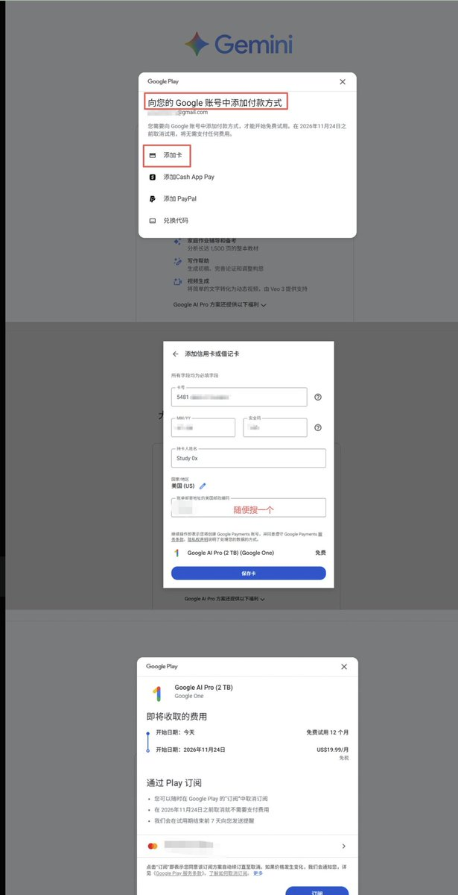
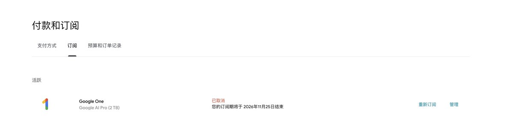

桃濑玲奈
@MomoseReina
@45_206MHz 这是教程，最重要就是看有没有资格



Fortwo.
@Fortwoweb3
谷歌Gemini AI Pro 白嫖一年教程
最近也刷了不少关于Gemini的妙用，已经有很多大佬整理出很多好玩的工具提示词了
开GPT太贵，嫌国内AI不好用的，可以用这个办法白嫖一年的Gemini
一共就三步
👉注册大学生身份
- 先去这里注册一个Pennsylvania State University的学生身份，门槛很低，随便注册就行 https://t.co/RqbCk7mqJM
45.206 MHᴢ 🇳🇿
@45_206MHz
@MomoseReina 哇———
没有🥲